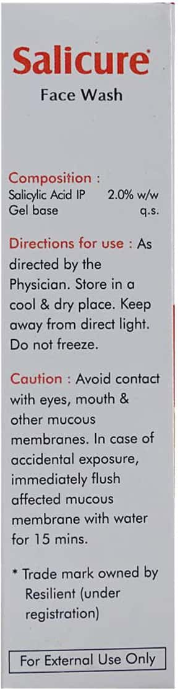
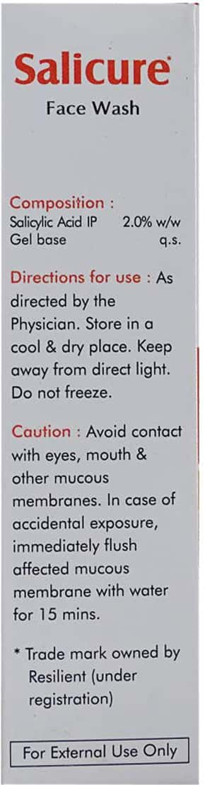
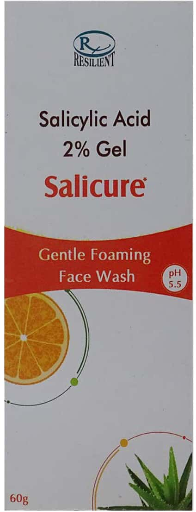

Salicure Face Wash
Salicure Face Wash is a gentle foaming face wash that helps to cleanse and purify the skin. It contains 2% salicylic acid, which helps to exfoliate and remove dead skin cells. It also contains aloe vera, which helps to soothe and moisturize the skin.
Benefits of Salicure Face Wash:
- Helps to cleanse and purify the skin
- Contains 2% salicylic acid, which helps to exfoliate and remove dead skin cells
- Contains aloe vera, which helps to soothe and moisturize the skin
- Gentle enough for everyday use
Directions for use:
- Wet your face with warm water.
- Apply a small amount of Salicure Face Wash to your hands and massage it into your skin.
- Rinse your face thoroughly with warm water.
- Pat your face dry with a clean towel.
Caution:
- For external use only.
- Avoid contact with eyes.
- If irritation occurs, discontinue use and consult a physician.
Ingredients:
- Salicylic Acid 2%
- Aloe Vera Gel
- Water
- Glycerin
- Cocamidopropyl Betaine
- Fragrance
Image 1:

Image 2:

Image 3:
